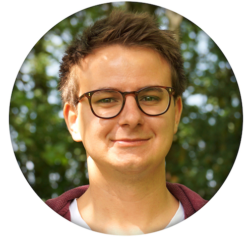

Kontakt
- Neckarstraße 17
- 64347 Griesheim
- Deutschland
- Mobil: 015111694067
- Email: benji.bauer@hotmail.de
- Geboren am 3. Mai 1994 in Darmstadt
Eltern
- Heinz Bauer - Facharzt für Allgemeinmedizin, Sportmedizin und Chirotherapie
- Denise Willomitzer-Bauer - Medizinisch Technische Assistentin
Sprachen
Schulbesuche
- 2000 - 2004, Friedrich-Ebert-Schule, Griesheim
- 2004 - 2013, Edith-Stein-Schule, Darmstadt, abgeschlossen am
- 20. Juni 2013 mit dem Erhalt des Abiturzeugnisses
- Seit 1. September 2013, Hochschule Darmstadt, Interactive Media Design
Praktika und Jobs
- September 2013, Agentur für Kommunikation G+R, Pfungstadt
- 24. Februar 2014 - 23. März 2014, Product Management TV, Deutsche Telekom AG, Darmstadt
- Seit September 2014, Studentischer Studienberater für „Interactive Media Design“
Programmiersprachen
- Seit 2013: Java (Processing), Arduino
- Seit 2014: Javascript, PHP, HTML, CSS,
- Seit 2015: Swift
Bekannte Programme
- Adobe Photoshop, Illustrator, InDesign, Dreamweaver, After Effekts, Github, Cinama4D, Unity,
Processing, Final Cut Pro X, iWork, MS Office